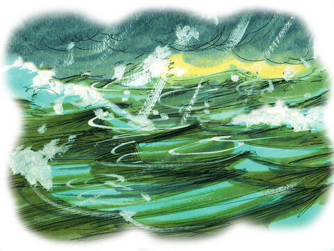
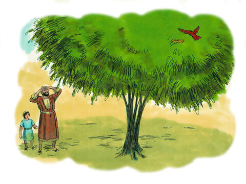

The Coming Of The Son Of Man
Immediately after the tribulation of those days shall the sun be darkened, and the moon shall not give her light, and the stars shall fall from heaven, and the powers of the heavens shall be shaken:
And then shall appear the sign of the Son of man in heaven: and then shall all the tribes of the earth mourn, and they shall see the Son of man coming in the clouds of heaven with power and great glory.
And he shall send his angels with a great sound of a trumpet, and they shall gather together his elect from the four winds, from one end of heaven to the other.
Now learn a parable of the fig tree; When his branch is yet tender, and putteth forth leaves, ye know that summer is nigh:
So likewise ye, when ye shall see all these things, know that it is near, even at the doors.
Verily I say unto you, This generation shall not pass, till all these things be fulfilled.
Heaven and earth shall pass away, but my words shall not pass away.
Matthew 24:29-35
- 
- 